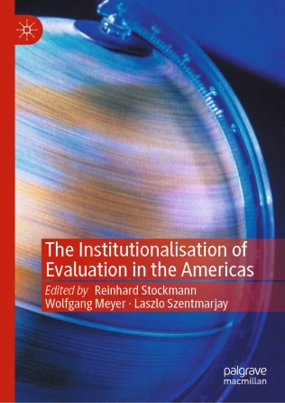
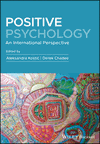

📚 Publications
2025
The Power of Self-Compassion and PERMA+4: A Dual-Path Model for Employee Flourishing
Donaldson, S. I., Kern, M. L., Suchta, M., McQuaid, M., & Donaldson, S. I.
 Behavioral Sciences
Behavioral Sciences
Development and Validation of the Global Economic Security Scale
Donaldson, S. I., Suchta, M., & Donaldson, S. I.
 International Journal of Applied Positive Psychology
International Journal of Applied Positive Psychology
PERMA+4 Well-being Predicts the Future: Longitudinal Evidence for Employee Positive Functioning and Performance
Donaldson, S. I., Suchta, M., Donaldson, S. I.
 The Journal of Positive Psychology
The Journal of Positive Psychology
PERMA+4 and Positive Organizational Psychology 2.0
Donaldson, S. I., Donaldson, S. I.
Advancing Positive Organizational Behaviour
🔗 DOI
PERMA+4 and Positive Organizational Psychology 2.0: Opportunities for Embracing Methodological and Technological Advances
Donaldson, S. I., Donaldson, S. I.
Advancing Positive Organizational Behaviour, 223–238
🔗 DOI
Validating the Satisfaction With Life Scale Among Early Adolescents: Psychometric Assessment Using Item Response Theory
Donaldson, S. I., Beard, T. A., Soto, D., Lee, R., Leventhal, A. M., Unger, J. B.
Current Psychology
🔗 DOI
2024
Systems-informed PERMA+4: Measuring well-being and performance at the employee, team, and supervisor levels
Donaldson, S. I., Donaldson, S. I., McQuaid, M., Kern, M. L.
 International Journal of Applied Positive Psychology
International Journal of Applied Positive Psychology
Systems-informed PERMA+4 and psychological safety: Predicting work-related well-being and performance across an international sample
Donaldson, S. I., Donaldson, S. I., McQuaid, M., Kern, M. L.
The Journal of Positive Psychology
2023
The PERMA+4 Short Scale: A Cross-Cultural Empirical Validation Using Item Response Theory
Donaldson, S. I., Donaldson, S. I., McQuaid, M., Kern, M. L.
International Journal of Applied Positive Psychology
🔗 DOI
2022
PERMA+4: A Framework for Work-Related Wellbeing, Performance and Positive Organizational Psychology 2.0
Donaldson, S. I., Van Zyl, L. E., Donaldson, S. I.
 Frontiers in Psychology
Frontiers in Psychology
🔗 DOI
Evaluation in the United States of America
Donaldson, S. I., Donaldson, S. I., Renger, J.
 The Institutionalisation of Evaluation in the Americas
🔗 DOI
2021
Examining PERMA+4 and Work Role Performance Beyond Self-Report Bias: Insights from Multitrait-Multimethod Analyses
Donaldson, S. I., Donaldson, S. I.
Journal of Positive Psychology
🔗 DOI
Positive Psychological Capital (PsyCap) Meets Multitrait-Multimethod Analysis: Is PsyCap a Robust Predictor of Well-Being and Performance Controlling for Self-Report Bias?
Donaldson, S. I., Chan, L., Wang-Ka, K.
International Journal of Applied Positive Psychology
🔗 DOI
Evaluating Positive Organizational Psychology Interventions
Donaldson, S. I., Chen, C.
Positive Organizational Psychology Interventions: Design and Evaluation 🔗 DOI
Designing Positive Organizational Psychology Interventions
Donaldson, S. I., Chen, C.
Positive Organizational Psychology Interventions: Design and Evaluation 🔗 DOI
The Positive Functioning at Work Scale: Psychometric Assessment, Validation, and Measurement Invariance
Donaldson, S. I., Donaldson, S. I.
 Journal of Well-Being Assessment
Journal of Well-Being Assessment
🔗 DOI
Global Perspectives on Positive Psychology
Donaldson, S. I., Heshmati, S., Donaldson, S. I.
 Positive Psychology: An International Perspective
2020
Examining Building Blocks of Well-Being Beyond PERMA and Self-Report Bias Donaldson, S. I., Heshmati, S., Lee, J. Y., Donaldson, S. I.
Journal of Positive Psychology
🔗 DOI
Advances in the Science of Positive Work and Organizations
Donaldson, S. I., Donaldson, S. I., Ko, I.
Positive Psychological Science: Improving Everyday Life, Health and Well-Being
🔗 DOI
2019
Reinvigorating Research on Gender in the Workplace Using a Positive Work and Organizations Perspective
Warren, M., Donaldson, S. I., Lee, J., Donaldson, S. I.
International Journal of Management Reviews, 21(4), 498–518
🔗 DOI
Evaluating Employee Positive Functioning and Performance: A Positive Work and Organizations Approach
Donaldson, S. I.
PQDT-Global
🔗 DOI
Evaluating Positive Psychology Interventions at Work: A Systematic Review and Meta-Analysis
Donaldson, S. I., Lee, J. Y., Donaldson, S. I.
International Journal of Applied Positive Psychology
🔗 DOI
The Effectiveness of Positive Psychology Interventions in the Workplace: A Theory-Driven Evaluation Approach
Donaldson, S. I., Lee, J., Donaldson, S. I.
Positive Psychological Interventions: Theories, Methodologies and Implementations
🔗 DOI
2017
Evaluating Scientific Progress in Positive Psychology
Warren, M., Donaldson, S. I., Donaldson, S. I.
Scientific Advances in Positive Psychology
🔗 DOI
Other People Matter: The Power of Positive Relationships
Donaldson, S. I., Donaldson, S. I.
 Toward a Positive Psychology of Relationships: New Directions in Theory and Practice
Toward a Positive Psychology of Relationships: New Directions in Theory and Practice
🔗 DOI
Applying Positive Psychology to Advance Relationship Science
Warren, M. A., Donaldson, S. I., Lee, J. Y.
Toward a Positive Psychology of Relationships: New Directions in Theory and Practice
🔗 DOI